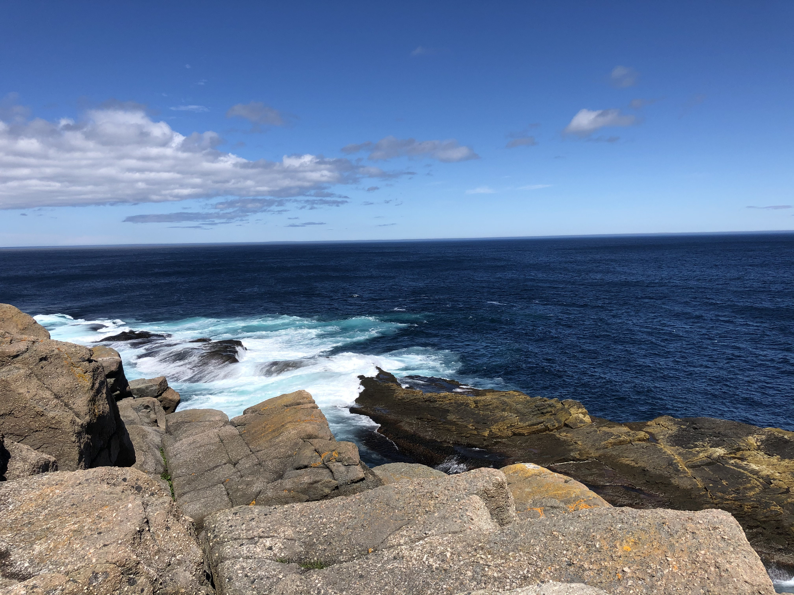

Here are a few great trails on the East Coast Trail:
-
Silver Mine Head Path 3.8km | Torbay to Middle Cove

-
Sugarloaf Path 8.8km | Logy Bay to Quidi Vidi

-
Cobbler Path 4.7km | Red Cliff to Outer Cove

-
Father Troy's Trail 8.9km | Flatrock to Torbay
 -
Stiles Cove Path 15.1km | Pouch Cove to Torbay